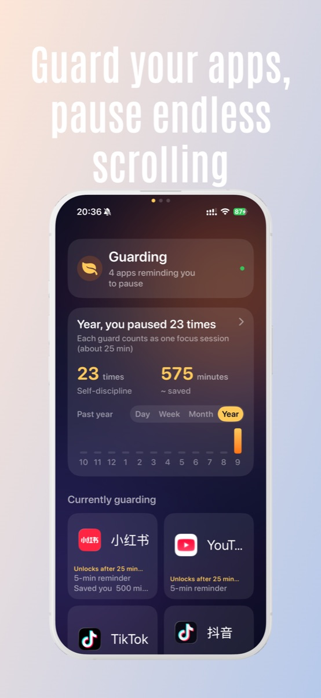
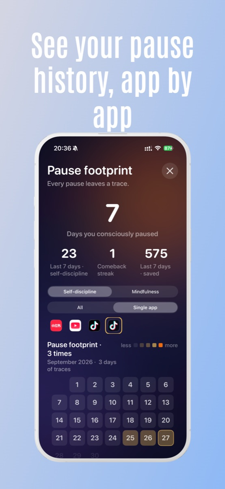
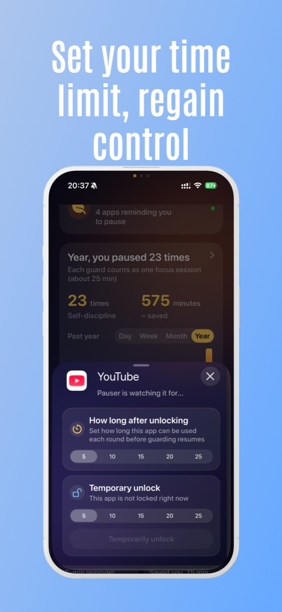
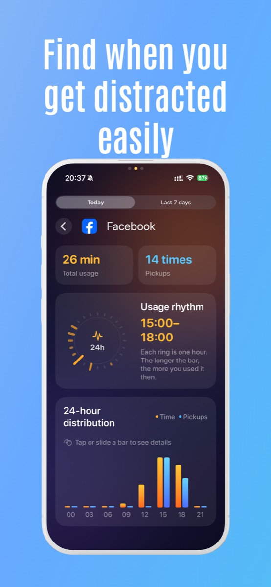
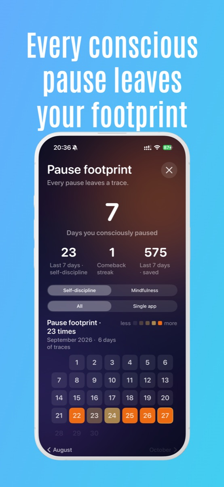
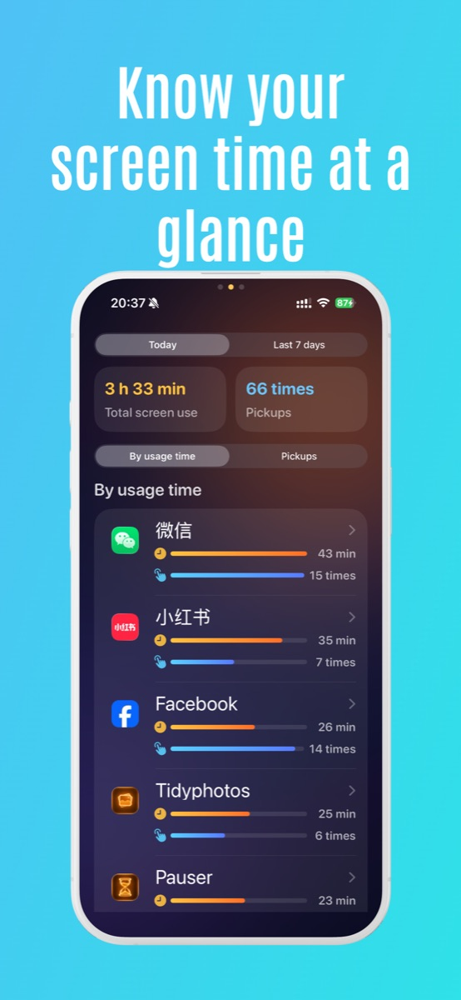

iOS · 屏幕使用时间 · 完全离线 iOS · Screen Time · Fully on-device
在你无意识打开短视频的那一刻,替你按下暂停。 A gentle pause before the scroll turns into a habit.
Pauser 不是限时封锁,也不是反沉迷羞辱器。它在你选择的应用累积使用约 3 分钟时,用一次系统级的小停顿,把注意力还给你。 Pauser is not a hard lock, and not a guilt machine. After about three minutes in one of the apps you choose, it surfaces a calm system-level pause so you can decide whether to keep going.
应用界面预览 A look inside Pauser






为什么"限时封锁"对你没用 Why a daily time limit doesn't help
你不会主动选择刷一小时短视频。你是一个视频一个视频地滑过去,回过神来,日已经过了半截。等到系统每日报告告诉你"今天用了 3 小时 22 分钟",已经太晚 — 关键的时间早就丢了。 Nobody chooses to scroll for an hour. You slide past one, then another, then another — and by the time the system daily report says "3h22m," the moment is gone. The damage happened in those first few minutes, not at hour three.
Pauser 在那"前几分钟"里出现,而不是等你刷完一小时才告诉你该停。 Pauser shows up in those first few minutes — long before the day's gone.
它怎么工作 How it works
- 挑出你想守护的应用Pick the apps you want to guard — TikTok、Instagram、YouTube Shorts、Reddit,任何容易刷起来的都算。 — TikTok, Instagram, YouTube Shorts, Reddit, or anything that grabs you.
- 累积约 3 分钟后,Pauser 提示暂停After ~3 minutes, Pauser nudges you to pause — 一次系统级的轻提醒,不是拦截弹窗。 — a calm system-level nudge, not a blocking pop-up.
- 选择你打开它的目的Pick your reason for opening it — 回消息、查个东西、就是想放松、还是只是手滑。 — reply to a message, look something up, take a break, or just opened it by accident.
- 如果仍要用,设个 5 / 10 分钟的限时通行If you still need it, grant yourself a 5 / 10 min pass — 时间到了,Pauser 自动把守护恢复。 — when time's up, Pauser puts the guard back on automatically.
Pauser 不是 What Pauser is NOT
- 不是永久封锁 — 你随时可以打开被守护的应用,只是要经过一次暂停Not a permanent lock. You can always open the app — you just see a pause first.
- 不是连续打卡 / 不记 streak — 不存在"中断 5 天就前功尽弃"Not a streak counter. There's no "lose your streak if you skip a day."
- 不是家长控制 — 它对你自己,不对别人Not parental control. It's for you, not for someone managing you.
- 不是反沉迷羞辱器 — 没有红色感叹号,没有"你今天又失败了"Not a guilt machine. No red exclamation marks. No "you failed today."
隐私默认开启 Private by default
Pauser 完全离线运行。没有账号、没有邮箱、没有广告、没有第三方 SDK、没有云同步、没有任何数据上传。你选的应用以 Apple 的匿名 token 存储,我们看不到它的名字,也发不出去。 Pauser runs fully offline. No account, no email, no ads, no third-party SDK, no cloud sync, no uploads. The apps you select are stored as Apple's anonymous tokens — we never see the names, and we have nothing to send.
Pauser Pro Pauser Pro
基础守护永久免费。Pro 解锁更多细节: The basic guard is free forever. Pro unlocks a few extras:
- 无限数量守护应用Unlimited guarded apps
- 每次暂停的意图历史(月历、回顾)Detailed intent history per pause (calendar, monthly recap)
- 更细的自定义守护时长与临时通行选项Finer-grained guard durations and timed-pass options
- 更安静的视觉主题A calmer visual theme
订阅可在 iOS 设置中随时取消;退款由 Apple 在 reportaproblem.apple.com 处理。 Subscriptions can be cancelled anytime in iOS Settings. Refunds are handled by Apple at reportaproblem.apple.com.
常见问题FAQ
支持哪些系统?What iOS version?
iOS 16 及以上,iPhone。iOS 16 or later, iPhone.
真的不收集数据?Really no data collection?
真的。零网络请求,零上传,零账号。Yes. Zero network calls. Zero uploads. Zero accounts.
可以只屏蔽某个 App 内部的某类内容吗?Can it block content inside another app?
不能 — 这是 iOS 公开能力的边界。第三方 App 只能以"应用级"或"类别级"被遮罩,无法只屏蔽某个 App 内部的某个页面或某类内容。Not at the moment — this is a limit of the iOS public APIs. Third-party apps can only be shielded at the app or category level, not selectively inside another app.
想少刷一点,但讨厌那种锁死你的工具? Want to scroll less, but hate tools that lock you out?
Pauser 就是为这种你设计的。 Pauser is for you.
下载 Pauser Download Pauser